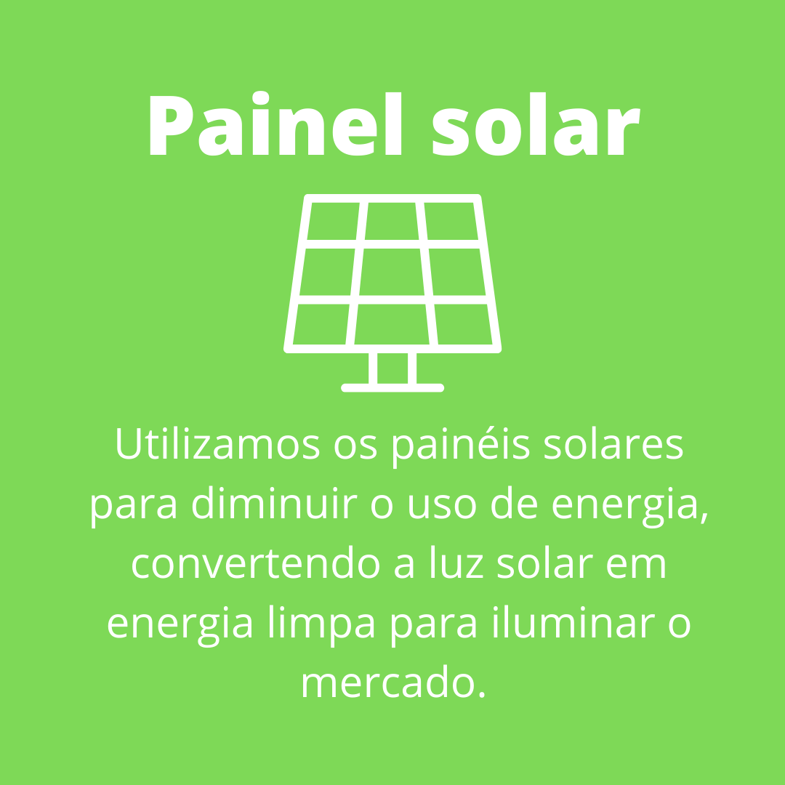
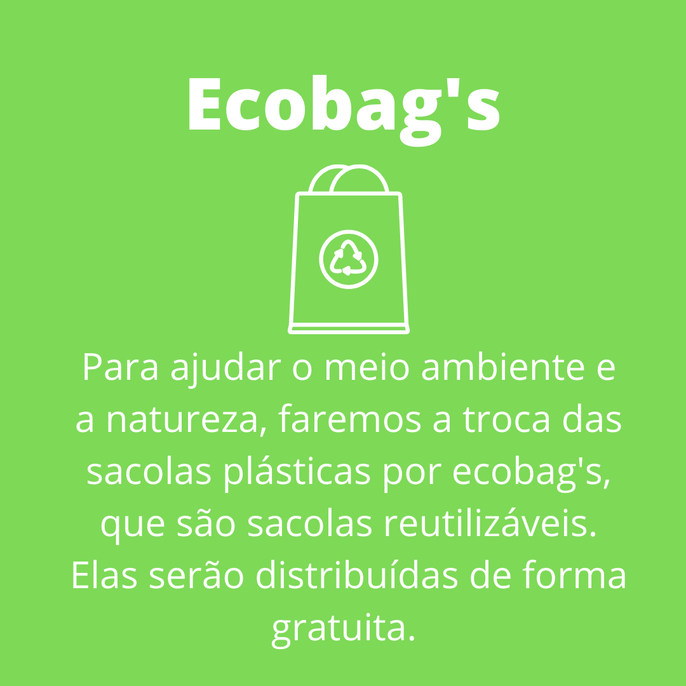
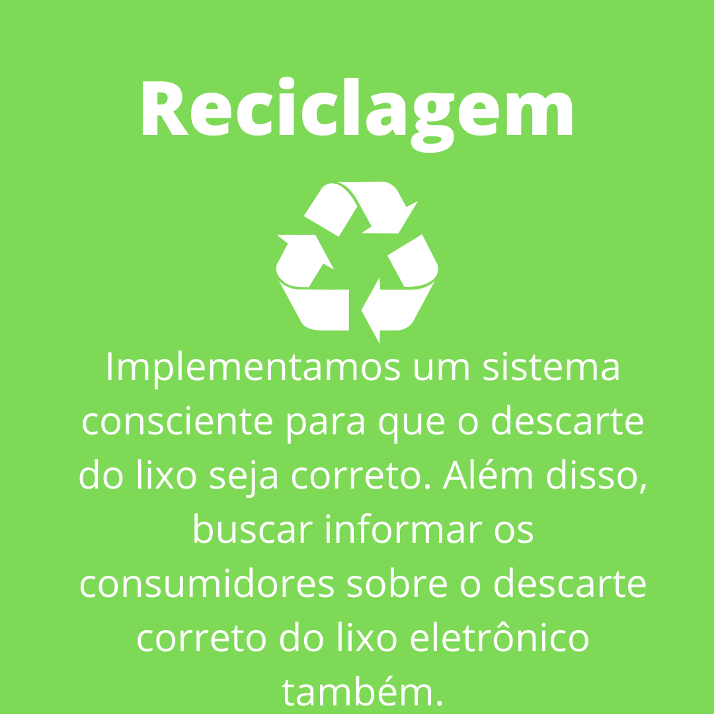
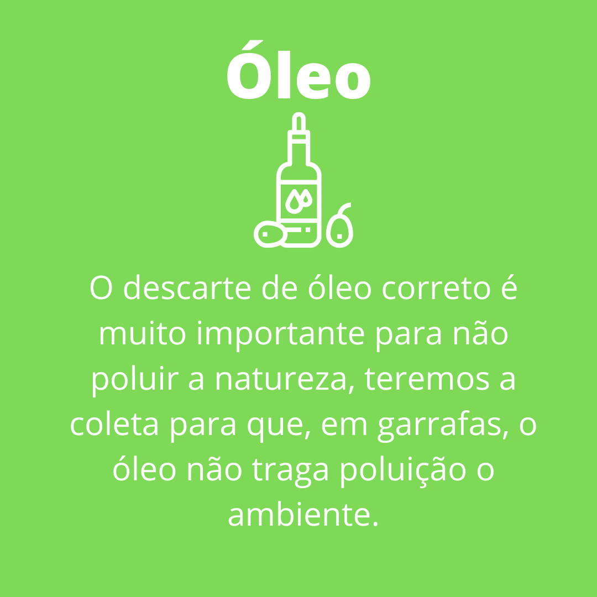
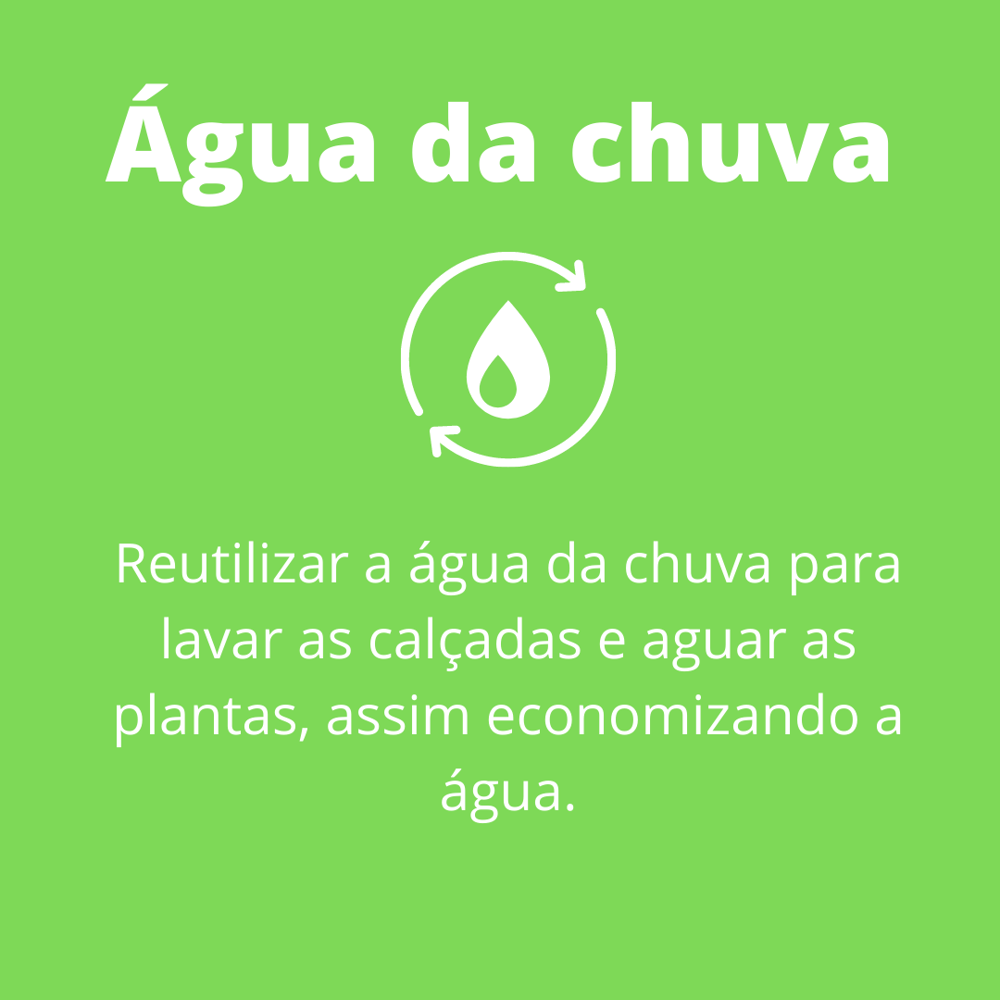
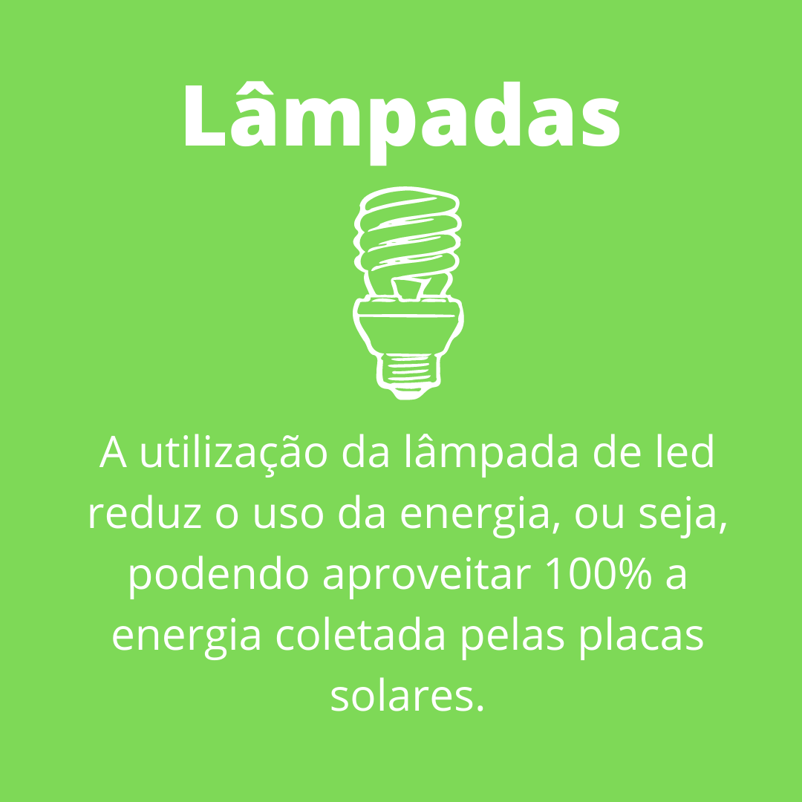
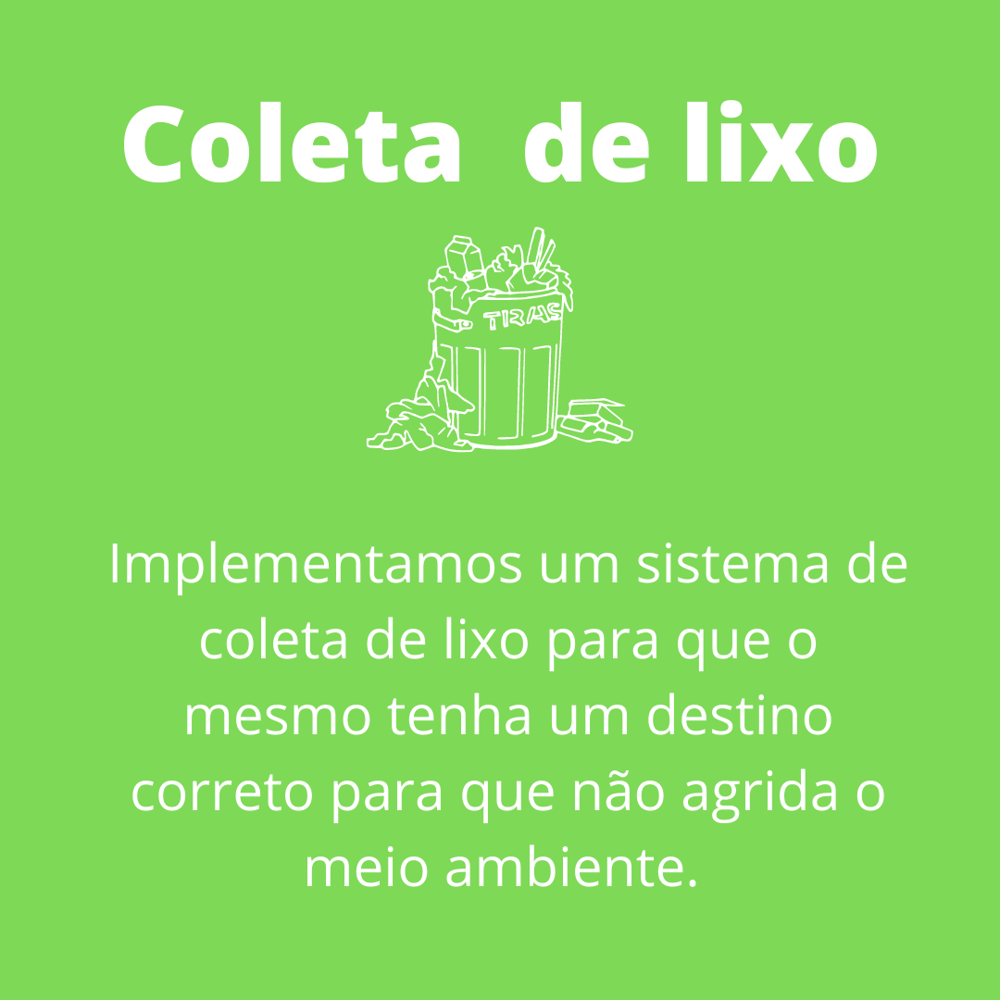
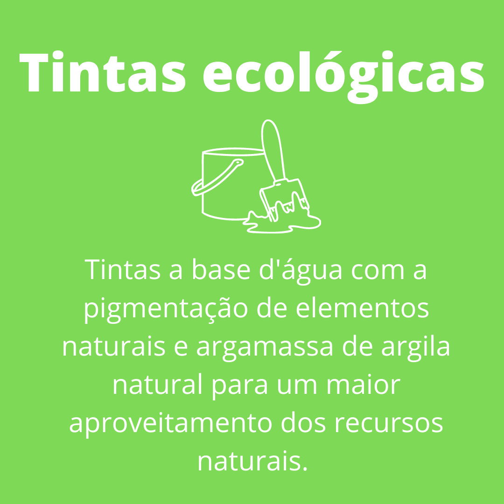
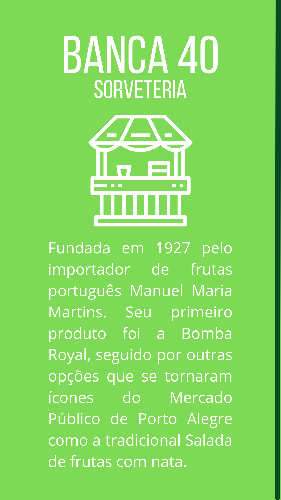
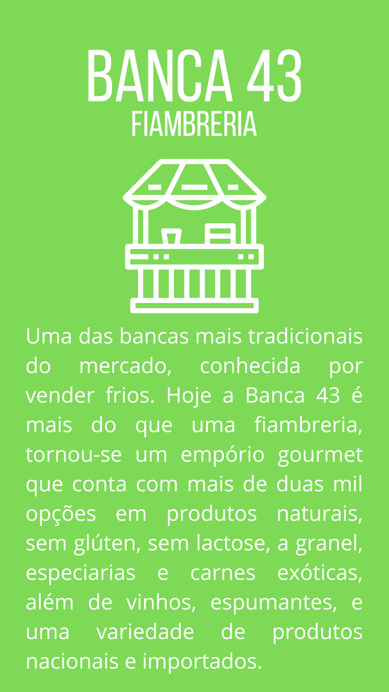

Atualmente, fala-se muito sobre sustentabilidade ou desenvolvimento sustentável em diversos setores de nossa sociedade. Mas, afinal de contas, o que esse termo representa?
O termo “desenvolvimento sustentável” foi usado pela primeira vez em 1987, por Gro Harlem Brundtland, ex-primeira-ministra da Noruega e que atuou como presidente de uma comissão da Organização das Nações Unidas. Ela publicou um livro (Our Common Future) onde escreveu em partes: "Desenvolvimento sustentável significa suprir as necessidades do presente sem afetar a habilidade das gerações futuras de suprirem as próprias necessidades".
Ao longo da maior parte da história do homem, ele viu-se como um dominador da natureza e acreditava que ela estava disponível somente para o seu bem-estar, para servir ao desenvolvimento econômico. Essa forma de pensar produziu uma “sociedade de consumo”, que é exatamente o oposto do desenvolvimento sustentável, pois as indústrias e fábricas buscam extrair o máximo de recursos do planeta para acumular riquezas e satisfazer o consumismo exagerado da população, ocorrendo muito desperdício. O caminho seguido pela economia até o momento foi extrair, produzir, vender, utilizar e descartar, sem se preocupar com a natureza e com as futuras gerações, como se os recursos naturais não tivessem fim.
Esse modelo de desenvolvimento da nossa sociedade estabelecido até o momento levou a consequências drásticas, como poluição ambiental e desigualdade social. Está comprovado que o ser humano não pode consumir o que e quanto quiser sem se preocupar com as consequências.
O que faremos para tornar o local sustentável?








Você conhece o mercado público?
A República ainda nem havia sido proclamada, assim como a escravidão também não tinha sido abolida, mas o Mercado já havia erguido suas paredes no distante 1869, em estilo neo-clássico. A aprovação do projeto original se deu entre 1862/63, tendo sido nomeada uma comissão do Conselho Municipal para acompanhar as obras. O projeto do engenheiro Frederico Heydtmann, previa um só pavimento. Em forma de quadrilátero, com torreões nas esquinas e um pátio central. Sempre sob a responsabilidade do poder público municipal, o Mercado logo tornou-se o maior e principal centro de abastecimento da cidade. Em 1871 tem início o calçamento do seu interior e dois anos depois, a arborização. Os primeiros açougues serão autorizados só em 1874, ano em que começa também a se cogitar a construção do segundo piso. Porém, o projeto não é levado adiante. Com o crescimento econômico, diversificação social e econômica do fim do século XIX, a proposta é retomada. Porém a verba aprovada pela Câmara Municipal é destinada apenas para a construção de chalés de madeira no pátio interno do Mercado. Mas, além de armazéns, tavernas, bares, açougues, fruteiras e restaurantes, o Mercado também possuía barbearias, hotéis, companhia de seguros e outros tipos de serviços.
Descarte correto do lixo
O descarte correto do lixo é fundamental para o bom funcionamento da coleta seletiva. Após a separação do seu lixo em dois, lixo comum e reciclável, é necessário que você conheça as formas corretas de destinar cada material. Lembrando sempre que os resíduos recicláveis, como garrafas pet, potes de sorvete, caixas de leite ou de suco, ou qualquer embalagem que contenha alimentos deve passar por uma higienização com água reutilizável ou guardanapos antes de ser depositado na lixeira. Quando sujos, os resíduos podem gerar odores, atrair vetores como moscas, baratas e ratos, além do risco de contaminação. Também há a possibilidade do comprometimento da saúde dos técnicos da reciclagem, além de inviabilizar a reciclagem do material.
Para saber mais sobre o descarte correto de cada tipo de lixo, assista o video que selecionamos abaixo:
Lixo eletrônico
O que é?
O lixo eletrônico ou Resíduos de Equipamentos Elétricos e Eletrônicos (REEE) são todos os dispositivos eletroeletrônicos, de celulares, tablets e computadores a TVs, lavadoras de louça e de roupa, geladeiras e etc., que foram descartados por seus donos.
Há uma preocupação com certos dispositivos descartados de forma irregular (jogados no lixo comum, por exemplo), como celulares, tablets, computadores e outros com baterias, pois estas contêm elementos altamente danosos ao meio ambiente, que não podem ser jogados em qualquer lugar. Além disso, esses aparelhos contém materiais valiosos e metais raros, úteis para fabricar outros eletrônicos com material reciclado.
Lixo eletrônico no meio ambiente
Com a popularização da telefonia móvel e da computação pessoal, a geração de lixo eletrônico aumentou muito, tanto porque muitas vezes comprar um aparelho novo é mais simples do que consertar, como também pelo estímulo da obsolescência programada, praticada pelos fabricantes para estimular o consumidor a sempre trocar seus aparelhos por novos, geralmente uma vez por ano (ou em intervalo menor).
Alguns elementos contidos no lixo eletrônico, embora sejam biodegradáveis, podem permanecer no solo por séculos, contaminando tudo enquanto isso. Já materiais nobres como ouro, prata, cobre e platina, além de metais raros são difíceis de se conseguir na natureza. É preferível sempre que o usuário descarte os aparelhos corretamente.
Saiba como descartar seu lixo eletrônico
O que é fibra ótica?
A fibra ótica é uma das principais tendências na telecomunicação dos últimos anos, principalmente por sua enorme capacidade de transmissão de dados a longas distâncias e alta velocidade, conectando usuários, centrais telefônicas e provedores de internet por todo o Brasil.
Trata-se de uma espécie de filamento altamente fino, transparente e flexível. É produzido de vidro ou plástico e funciona de maneira eletricamente isolante. Sua principal função consiste, como já dito, em transmitir conteúdo digital (dados, voz e vídeo) por meio de sinais no formato de luz por longuíssimos quilômetros.
O fio ótico é considerado um dos tipos de cabos de rede mais eficientes para veicular sinais. Quando comparado com tecnologias convencionais, torna-se muito mais vantajoso em virtude de sua qualidade, capacidade e velocidade no tráfego de informações.
Como funciona fibra ótica?
A internet fibra ótica funciona a partir da transmissão de banda larga a longas distâncias sem perder qualidade nem gerar instabilidade. Isso acontece porque o cabo de fibra ótica permite que mais sinais sejam difundidos, ao contrário do material de cobre utilizado nas conexões DSL, que é mais limitado.
Diferentemente da internet por fio de cobre, a fibra ótica não usa eletricidade na transmissão de sinais, na medida em que os transforma em luz para os enviar por meio do cabo. Tal processo pode ser feito de duas formas: por laser (fibra monomodo) ou LED (fibra multimodo).
Basicamente, a primeira trabalha com apenas um sinal de cada vez, tendo em vista que só tem uma fonte de luz. Por outro lado, conta com a vantagem de veicular conteúdo por grandes distâncias, sem perder a qualidade.
Já a segunda consegue trocar vários sinais simultaneamente. Além disso, é mais barata e recomendada para redes locais, visto que deve ser usada em distâncias menores, que chegam, no máximo, a pouco mais de 300 metros.
Para entender um pouco mais sobre como funciona a fibra ótica e como ela chega a sua casa, selecionamos um vídeo e sugerimos que você assista:
Bancas


Aproveitamento
O aproveitamento integral dos alimentos é um método utilizado para que se possa aproveitar os alimentos em sua totalidade. O objetivo é, além de diminuir o desperdício, contribuir para um mundo mais sustentável e obter de um ingrediente todo o seu potencial nutricional.
“Considerando o momento que estamos vivendo de isolamento social devido ao COVID-19, em que é recomendado diminuir as idas ao mercado, o aproveitamento integral dos alimentos permite além de economizar dinheiro, a possibilidade de nos nutrir de forma mais adequada” afirma Prof. Bruno Tupinambá, Coordenador do Curso de Gastronomia da Faculdade Batista Brasileira.
Para saber receitas deliciosas com alimentos que você possivelmente colocaria no lixo clique aqui.
Composteira
O que é compostagem?
A compostagem é um processo que envolve a transformação de materiais que podemos chamar de grosseiros, tais como estrume, penas, lixo doméstico orgânico, serragem, algas marinhas entre outros, em materiais que possam ser utilizados na agricultura.
Para que serve uma composteira?
A composteira é um processo biológico de valorização e reciclagem da matéria orgânica em caixas onde minhocas e microorganismos transformam resíduos de origem doméstica, gerados na cozinha e quintal, em adubos.